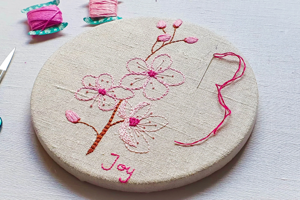

Serviços Oferecidos
A Tia Sônia oferece uma variedade de serviços de bordado personalizados, incluindo: Bordado em roupas: Personalização de camisetas, jaquetas, bolsas e outros itens de vestuário com designs exclusivos. Bordado em acessórios: Criação de bordados em chapéus, lenços, almofadas e outros acessórios para adicionar um toque especial. Bordado para eventos: Personalização de itens para casamentos, aniversários e outras ocasiões especiais, como toalhas, guardanapos e lembrancinhas. Bordado artístico: Criação de peças decorativas únicas para a casa ou para presentear, como quadros bordados e painéis decorativos. A Tia Sônia se dedica a oferecer um serviço personalizado e de alta qualidade, garantindo que cada cliente receba uma peça única e especial.
Sobre a Tia Sônia
A Tia Sônia é uma bordadeira experiente, apaixonada por criar peças únicas e personalizadas. Com anos de prática, ela domina diversas técnicas de bordado, desde o tradicional ponto cruz até o moderno bordado livre. Seu trabalho é conhecido pela atenção aos detalhes e pela qualidade excepcional, tornando cada peça uma verdadeira obra de arte. A Tia Sônia se dedica a transformar ideias em realidade, oferecendo serviços de bordado personalizados para clientes que buscam algo especial e exclusivo.

Catalogo de Bordados

Bordado de Flores

Bordado de Animais

Bordado de Paisagens

Bordado de Retratos

Bordado de Objetos
